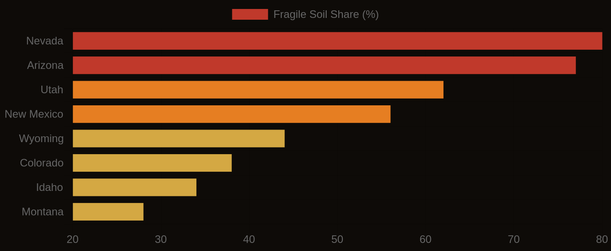

Louisiana's coast is vanishing at an alarming rate, losing land equivalent to a football field every 100 minutes. Most of this dramatic land loss is not from the relentless battering of waves or storm surge, but from a quieter, more insidious process: soil subsidence, predominantly driven by the oxidation of organic soils known as Histosols. These highly organic soils, essentially thick layers of peat, are natural sponges, formed over millennia in waterlogged, anaerobic (oxygen-free) conditions.
When these coastal environments are drained, whether for agriculture, urban development, or channelization, oxygen permeates the soil profile. This exposure triggers the microbial decomposition of the organic matter, releasing carbon dioxide into the atmosphere and drastically reducing the soil's volume. This irreversible process, called Histosol oxidation, is the primary mechanism behind the rapid subsidence observed across the Gulf Coast and other low-lying coastal plains. Quantifying this risk begins with understanding the soil's organic matter content (OMC), typically measured as a percentage of dry weight, and its bulk density, indicating how much solid material is packed into a given volume. Both properties are critical for modeling potential subsidence, with data available in SSURGO fields like `chorizon.om` for organic matter and `chorizon.dbthirdbar_r` for bulk density.
State by State
The extent of these vulnerable organic soils is mapped precisely within the National Cooperative Soil Survey's SSURGO database. Coastal planners and infrastructure managers can query these records to identify areas like the Barataria-Terrebonne estuary in Louisiana, where deep Histosols dominate the landscape. Here, a mere one-meter drop in the water table can initiate decades of relentless subsidence, compromising levees, pipelines, and coastal wetlands. Such areas show stark differences from adjacent mineral soils, which lack the voluminous organic fraction susceptible to this collapse.
The economic implications are profound. Coastal communities face escalating flood insurance premiums, diminished property values, and the monumental costs of reinforcing or relocating critical infrastructure. A single mile of subsided road, for example, might require millions in repeated repairs, a cost compounded by ongoing relative sea level rise. Without precise data on soil properties, these liabilities remain hidden until failure.
Multi-Hazard Soil Risk — Five Western States Compared
The Data Behind the Map
We integrate high-resolution LiDAR data, which captures subtle topographic variations, with SSURGO's detailed soil property information. Topographic Wetness Index (TWI), for instance, derived from LiDAR, effectively predicts SSURGO drainage classes with 78-84% accuracy, allowing us to pinpoint areas where organic soils are most susceptible to drainage and subsequent oxidation. By joining `component` and `chorizon` tables in Soil Data Access via `cokey`, we can identify specific soil horizons with high organic matter content, flagging them for subsidence risk. This approach allows engineers and developers to assess site suitability with unprecedented accuracy before ground is broken.
This granular understanding of soil subsidence is not merely an academic exercise; it is an urgent requirement for resilient coastal planning. By using the rich detail within SSURGO and KSSL data, combined with advanced geospatial analysis, we can equip professionals to make informed decisions that mitigate the financial and ecological impact of vanishing land. Ignoring the silent collapse of organic soils means underestimating the true cost of coastal development and the accelerating vulnerability of our most valuable coastal assets.
Fragile Soil Index Across America
